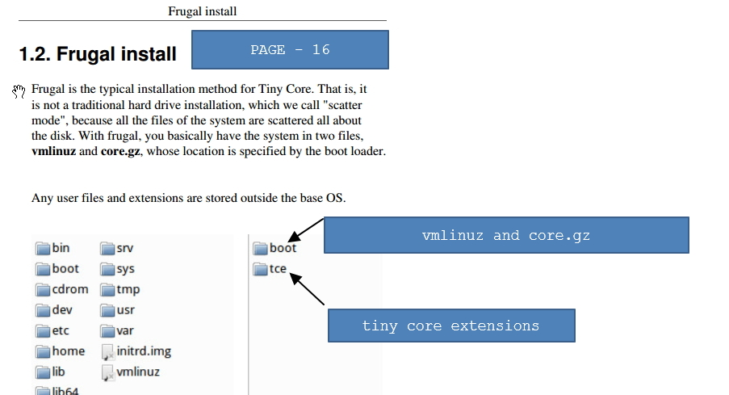
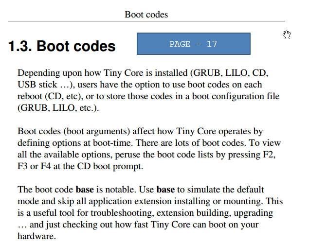
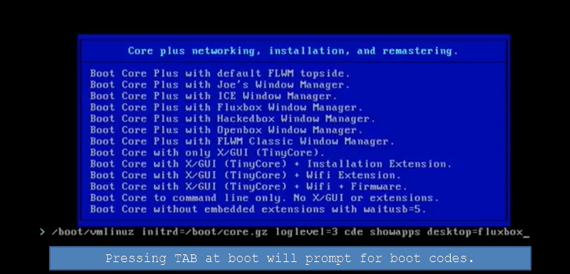
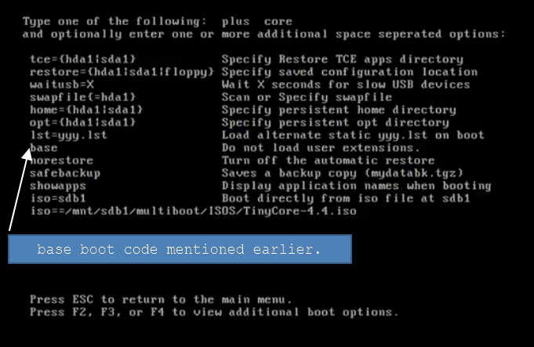

Intentionally Left Blank.
https://mountpeaks.wordpress.com/2012/03/01/some-notes-on-tinycore/
http://distro.ibiblio.org/tinycorelinux/concepts.html
http://wiki.tinycorelinux.net/wiki:start
http://wiki.tinycorelinux.net/wiki:persistence_for_dummies
Into the Core - tinyCore Linux book.pdf
Ebook saved in
/Dropbox/EBOOK/tinyCore Linux book.pdf. We will cover the statements step by step.
Frugal Install
Page - 16 says that in Frugal installation, there are only 2 files:
1. vmlinuz and
2. core.gz ( initrd . A basic linux filesystem that will be deployed in to RAM)

bootloader has a special purpose to start the tinyCore. bootloader loads these 2 files and starts the OS.
Boot codes

Boot codes or boot arguments defines the nature of tinyCore.
GRUB ,
LILO etc bootloaders uses boot codes or boot arguments to load tinyCore. Use
F2,
F3 or
F4 at the boot prompt to see the boot code lists. It says
boot code base is notable to load basic tinyCore only.

Press TAB when selecting Window Manager. It will show a prompt for boot codes. Then press
F1 or
F2 to show available options of boot codes.

NEXT TOPIC.
SITE ADDR